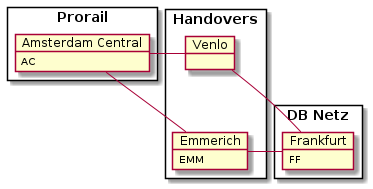

Note
Click here to download the full example code
Example: Train from Amsterdam to Frankfurt¶
Here we investigate the routing specification for example from train-ac-ff-v1.yml.
Given this infrastructure:

This object diagramm shows a szenario for a train from AC to Frankfurt FF which is planned to operate in december 2021. On Fri-Sun handover is EMM. On Mon-Thu handover is Venlo.
![object "RO/1080/12AB: RoutingInfo" as tr
object "AC->EMM: RouteSection" as ac_emm
object "AC->Venlo: RouteSection" as ac_venlo
object "EMM->FF: RouteSection" as emm_ff
object "Venlo->FF: RouteSection" as venlo_ff
ac_emm : departure_time = 23:50
ac_emm : travel_time = 02:10
ac_emm : calendar = [2021-12-01, 2021-12-31, Mon-Thu]
emm_ff : departure_time = 02:00
emm_ff : travel_time = 10:00
emm_ff : calendar = [2021-12-02, 2021-12-31, Tue-Fri]
ac_venlo : departure_time = 23:50
ac_venlo : travel_time = 02:05
ac_venlo : calendar = [2021-12-01, 2021-12-31, Fri-Sun]
venlo_ff : departure_time = 02:00
venlo_ff : travel_time = 10:00
venlo_ff : stop_time = 00:05
venlo_ff : calendar = [2021-12-01, 2022-01-01, Sat-Mon]
tr *-- ac_emm
tr *-- ac_venlo
tr *-- emm_ff
tr *-- venlo_ff
ac_emm ..> emm_ff : connects_to >
ac_venlo ..> venlo_ff : connects_to >
note top of ac_venlo
- First run on Fr 2021-12-01
- Arrival in Venlo on Saturday 1:55 =>
calendar of Venlo->FF must start on Saturday
(overnight)
end note
note left of venlo_ff
- Train stops at Venlo for 5 minutes
- Last SectionRun starts on Sa 2022-01-01!
end note
note as n1
Another overnight between AC -> EMM =>
must shift calendar of EMM->FF one day.
A section calendar is always relative to the start
at station of departure of the connected sections.
end note
n1 .. emm_ff
n1 .. ac_emm](../_images/plantuml-cabc05aa180a611a9f04994c68aff74da687ef3b.png)
from tom.plot import plot_train, plot_graph
from tom.tom import make_train_from_yml, TrainRun, RouteSection, Route
from tom.util import example, dump_routing_info_as_xml
Load example 4 from yaml specification
pattern = 'ac-ff-v1'
train_specs, t_spec_file = example('../tests/data', pattern)
print(t_spec_file.read_text())
Out:
---
coreID: 12AB
lead_ru: 1080 # DB FV
# initial revision of RoutingInfo.
# All sections have version 1
version: 1
sections:
- id: 10
version: 1
departure_station: AC
arrival_station: EMM
travel_time: '02:10:00'
succ:
- 11
- id: 11
version: 1
departure_station: EMM
arrival_station: FF
departure_time: '02:00:00' # => Route Construction Start
# Not stop_time => pass through
travel_time: '03:00:00'
calendar:
# Start in Amsterdam is 1.12.2021 23:50
begin: '2021-12-02'
end: '2021-12-31'
mask: 'Tue Wed Thu Fri'
color: green
- id: 20
version: 1
departure_station: AC
arrival_station: Venlo
travel_time: '01:10:00'
succ:
- 21
- id: 21
version: 1
departure_station: Venlo
arrival_station: FF
departure_time: '02:00:00' # => Route Construction Start
stop_time: '01:00:00' # => 1 hour stop in Venlo
travel_time: '03:00:00'
calendar:
begin: '2021-12-02'
end: '2022-01-01'
mask: 'Sat Sun Mon'
color: salmon
Create train object and show its train id.
t = make_train_from_yml(t_spec_file)
t.train_id()
Out:
'TR/8350/12AB/00/2021'
Timetable¶
With to_dataframe() you can create a Pandas DataFrame which you can
export to excel.
df = t.to_dataframe()
df
Bildfahrplan¶
Show timetable as plot
plot_train(t)

Show only the first week
plot_train(t, no_of_runs=7)

Route Sections¶
From which sections the train is composed?
section: RouteSection
for section in t.sections:
print(section.description(), "\n")
Out:
ID : 10.v1
Calender : 01/12 to 30/12 110001111000111100011110001111
Start at: 23:50 in AC
Arrival at: 02:00 in EMM
Successors: [11]
ID : 11.v1
Calender : 02/12 to 31/12 110001111000111100011110001111
Start at: 02:00 in EMM
Arrival at: 05:00 in FF
Successors: []
ID : 20.v1
Calender : 03/12 to 31/12 11100001110000111000011100001
Start at: 23:50 in AC
Arrival at: 01:00 in Venlo
Successors: [21]
ID : 21.v1
Calender : 04/12 to 01/01 11100001110000111000011100001
Start at: 02:00 in Venlo
Arrival at: 05:00 in FF
Successors: []
Section graph¶
The section graph is computed using the successor relation:
sg = t.section_graph()
plot_graph(sg)
Routes¶
Print all possible routes. Routes are calculated from all possible paths in the section graph.
route: Route
for route in t.routes():
print(route.description(), "\n")
Out:
Route : AC-EMM-FF
Key : 10-11
Calendar : 01/12 to 30/12 110001111000111100011110001111
Start at: 23:50 in AC
Arrival at: 02:00 in EMM
Arrival at: 05:00 in FF
Route : AC-Venlo-FF
Key : 20-21
Calendar : 03/12 to 31/12 11100001110000111000011100001
Start at: 23:50 in AC
Arrival at: 01:00 in Venlo
Arrival at: 05:00 in FF
Section runs¶
For each day of the calendar of a section a SectionRun is created. The section runs are the rows of RouteSection.to_dataframe:
for section in t.sections:
print(f"{section.section_id}: {section}")
print(section.to_dataframe(), "\n")
Out:
10: AC-EMM
ID AC EMM
2021-12-01 10 2021-12-01 23:50:00 2021-12-02 02:00:00
2021-12-02 10 2021-12-02 23:50:00 2021-12-03 02:00:00
2021-12-06 10 2021-12-06 23:50:00 2021-12-07 02:00:00
2021-12-07 10 2021-12-07 23:50:00 2021-12-08 02:00:00
2021-12-08 10 2021-12-08 23:50:00 2021-12-09 02:00:00
2021-12-09 10 2021-12-09 23:50:00 2021-12-10 02:00:00
2021-12-13 10 2021-12-13 23:50:00 2021-12-14 02:00:00
2021-12-14 10 2021-12-14 23:50:00 2021-12-15 02:00:00
2021-12-15 10 2021-12-15 23:50:00 2021-12-16 02:00:00
2021-12-16 10 2021-12-16 23:50:00 2021-12-17 02:00:00
2021-12-20 10 2021-12-20 23:50:00 2021-12-21 02:00:00
2021-12-21 10 2021-12-21 23:50:00 2021-12-22 02:00:00
2021-12-22 10 2021-12-22 23:50:00 2021-12-23 02:00:00
2021-12-23 10 2021-12-23 23:50:00 2021-12-24 02:00:00
2021-12-27 10 2021-12-27 23:50:00 2021-12-28 02:00:00
2021-12-28 10 2021-12-28 23:50:00 2021-12-29 02:00:00
2021-12-29 10 2021-12-29 23:50:00 2021-12-30 02:00:00
2021-12-30 10 2021-12-30 23:50:00 2021-12-31 02:00:00
11: EMM-FF
ID EMM FF
2021-12-02 11 2021-12-02 02:00:00 2021-12-02 05:00:00
2021-12-03 11 2021-12-03 02:00:00 2021-12-03 05:00:00
2021-12-07 11 2021-12-07 02:00:00 2021-12-07 05:00:00
2021-12-08 11 2021-12-08 02:00:00 2021-12-08 05:00:00
2021-12-09 11 2021-12-09 02:00:00 2021-12-09 05:00:00
2021-12-10 11 2021-12-10 02:00:00 2021-12-10 05:00:00
2021-12-14 11 2021-12-14 02:00:00 2021-12-14 05:00:00
2021-12-15 11 2021-12-15 02:00:00 2021-12-15 05:00:00
2021-12-16 11 2021-12-16 02:00:00 2021-12-16 05:00:00
2021-12-17 11 2021-12-17 02:00:00 2021-12-17 05:00:00
2021-12-21 11 2021-12-21 02:00:00 2021-12-21 05:00:00
2021-12-22 11 2021-12-22 02:00:00 2021-12-22 05:00:00
2021-12-23 11 2021-12-23 02:00:00 2021-12-23 05:00:00
2021-12-24 11 2021-12-24 02:00:00 2021-12-24 05:00:00
2021-12-28 11 2021-12-28 02:00:00 2021-12-28 05:00:00
2021-12-29 11 2021-12-29 02:00:00 2021-12-29 05:00:00
2021-12-30 11 2021-12-30 02:00:00 2021-12-30 05:00:00
2021-12-31 11 2021-12-31 02:00:00 2021-12-31 05:00:00
20: AC-Venlo
ID AC Venlo
2021-12-03 20 2021-12-03 23:50:00 2021-12-04 01:00:00
2021-12-04 20 2021-12-04 23:50:00 2021-12-05 01:00:00
2021-12-05 20 2021-12-05 23:50:00 2021-12-06 01:00:00
2021-12-10 20 2021-12-10 23:50:00 2021-12-11 01:00:00
2021-12-11 20 2021-12-11 23:50:00 2021-12-12 01:00:00
2021-12-12 20 2021-12-12 23:50:00 2021-12-13 01:00:00
2021-12-17 20 2021-12-17 23:50:00 2021-12-18 01:00:00
2021-12-18 20 2021-12-18 23:50:00 2021-12-19 01:00:00
2021-12-19 20 2021-12-19 23:50:00 2021-12-20 01:00:00
2021-12-24 20 2021-12-24 23:50:00 2021-12-25 01:00:00
2021-12-25 20 2021-12-25 23:50:00 2021-12-26 01:00:00
2021-12-26 20 2021-12-26 23:50:00 2021-12-27 01:00:00
2021-12-31 20 2021-12-31 23:50:00 2022-01-01 01:00:00
21: Venlo-FF
ID Venlo FF
2021-12-04 21 2021-12-04 02:00:00 2021-12-04 05:00:00
2021-12-05 21 2021-12-05 02:00:00 2021-12-05 05:00:00
2021-12-06 21 2021-12-06 02:00:00 2021-12-06 05:00:00
2021-12-11 21 2021-12-11 02:00:00 2021-12-11 05:00:00
2021-12-12 21 2021-12-12 02:00:00 2021-12-12 05:00:00
2021-12-13 21 2021-12-13 02:00:00 2021-12-13 05:00:00
2021-12-18 21 2021-12-18 02:00:00 2021-12-18 05:00:00
2021-12-19 21 2021-12-19 02:00:00 2021-12-19 05:00:00
2021-12-20 21 2021-12-20 02:00:00 2021-12-20 05:00:00
2021-12-25 21 2021-12-25 02:00:00 2021-12-25 05:00:00
2021-12-26 21 2021-12-26 02:00:00 2021-12-26 05:00:00
2021-12-27 21 2021-12-27 02:00:00 2021-12-27 05:00:00
2022-01-01 21 2022-01-01 02:00:00 2022-01-01 05:00:00
TrainRuns¶
Each TrainRun defines a row in the timetable of the train above
tr: TrainRun
for tr in t.train_run_iterator():
print(tr)
for sr in tr.sections_runs:
print(sr)
print("\n")
Out:
TR/8350/12AB/10/2021/2021-12-01
10.v1:2021-12-01 23:50 OTR=-1 AC-EMM 2021-12-02 02:00 OTR=0
11.v1:2021-12-02 02:00 OTR=0 EMM-FF 2021-12-02 05:00 OTR=0
TR/8350/12AB/10/2021/2021-12-02
10.v1:2021-12-02 23:50 OTR=-1 AC-EMM 2021-12-03 02:00 OTR=0
11.v1:2021-12-03 02:00 OTR=0 EMM-FF 2021-12-03 05:00 OTR=0
TR/8350/12AB/10/2021/2021-12-06
10.v1:2021-12-06 23:50 OTR=-1 AC-EMM 2021-12-07 02:00 OTR=0
11.v1:2021-12-07 02:00 OTR=0 EMM-FF 2021-12-07 05:00 OTR=0
TR/8350/12AB/10/2021/2021-12-07
10.v1:2021-12-07 23:50 OTR=-1 AC-EMM 2021-12-08 02:00 OTR=0
11.v1:2021-12-08 02:00 OTR=0 EMM-FF 2021-12-08 05:00 OTR=0
TR/8350/12AB/10/2021/2021-12-08
10.v1:2021-12-08 23:50 OTR=-1 AC-EMM 2021-12-09 02:00 OTR=0
11.v1:2021-12-09 02:00 OTR=0 EMM-FF 2021-12-09 05:00 OTR=0
TR/8350/12AB/10/2021/2021-12-09
10.v1:2021-12-09 23:50 OTR=-1 AC-EMM 2021-12-10 02:00 OTR=0
11.v1:2021-12-10 02:00 OTR=0 EMM-FF 2021-12-10 05:00 OTR=0
TR/8350/12AB/10/2021/2021-12-13
10.v1:2021-12-13 23:50 OTR=-1 AC-EMM 2021-12-14 02:00 OTR=0
11.v1:2021-12-14 02:00 OTR=0 EMM-FF 2021-12-14 05:00 OTR=0
TR/8350/12AB/10/2021/2021-12-14
10.v1:2021-12-14 23:50 OTR=-1 AC-EMM 2021-12-15 02:00 OTR=0
11.v1:2021-12-15 02:00 OTR=0 EMM-FF 2021-12-15 05:00 OTR=0
TR/8350/12AB/10/2021/2021-12-15
10.v1:2021-12-15 23:50 OTR=-1 AC-EMM 2021-12-16 02:00 OTR=0
11.v1:2021-12-16 02:00 OTR=0 EMM-FF 2021-12-16 05:00 OTR=0
TR/8350/12AB/10/2021/2021-12-16
10.v1:2021-12-16 23:50 OTR=-1 AC-EMM 2021-12-17 02:00 OTR=0
11.v1:2021-12-17 02:00 OTR=0 EMM-FF 2021-12-17 05:00 OTR=0
TR/8350/12AB/10/2021/2021-12-20
10.v1:2021-12-20 23:50 OTR=-1 AC-EMM 2021-12-21 02:00 OTR=0
11.v1:2021-12-21 02:00 OTR=0 EMM-FF 2021-12-21 05:00 OTR=0
TR/8350/12AB/10/2021/2021-12-21
10.v1:2021-12-21 23:50 OTR=-1 AC-EMM 2021-12-22 02:00 OTR=0
11.v1:2021-12-22 02:00 OTR=0 EMM-FF 2021-12-22 05:00 OTR=0
TR/8350/12AB/10/2021/2021-12-22
10.v1:2021-12-22 23:50 OTR=-1 AC-EMM 2021-12-23 02:00 OTR=0
11.v1:2021-12-23 02:00 OTR=0 EMM-FF 2021-12-23 05:00 OTR=0
TR/8350/12AB/10/2021/2021-12-23
10.v1:2021-12-23 23:50 OTR=-1 AC-EMM 2021-12-24 02:00 OTR=0
11.v1:2021-12-24 02:00 OTR=0 EMM-FF 2021-12-24 05:00 OTR=0
TR/8350/12AB/10/2021/2021-12-27
10.v1:2021-12-27 23:50 OTR=-1 AC-EMM 2021-12-28 02:00 OTR=0
11.v1:2021-12-28 02:00 OTR=0 EMM-FF 2021-12-28 05:00 OTR=0
TR/8350/12AB/10/2021/2021-12-28
10.v1:2021-12-28 23:50 OTR=-1 AC-EMM 2021-12-29 02:00 OTR=0
11.v1:2021-12-29 02:00 OTR=0 EMM-FF 2021-12-29 05:00 OTR=0
TR/8350/12AB/10/2021/2021-12-29
10.v1:2021-12-29 23:50 OTR=-1 AC-EMM 2021-12-30 02:00 OTR=0
11.v1:2021-12-30 02:00 OTR=0 EMM-FF 2021-12-30 05:00 OTR=0
TR/8350/12AB/10/2021/2021-12-30
10.v1:2021-12-30 23:50 OTR=-1 AC-EMM 2021-12-31 02:00 OTR=0
11.v1:2021-12-31 02:00 OTR=0 EMM-FF 2021-12-31 05:00 OTR=0
TR/8350/12AB/20/2021/2021-12-03
20.v1:2021-12-03 23:50 OTR=-1 AC-Venlo 2021-12-04 01:00 OTR=0
21.v1:2021-12-04 02:00 OTR=0 Venlo-FF 2021-12-04 05:00 OTR=0
TR/8350/12AB/20/2021/2021-12-04
20.v1:2021-12-04 23:50 OTR=-1 AC-Venlo 2021-12-05 01:00 OTR=0
21.v1:2021-12-05 02:00 OTR=0 Venlo-FF 2021-12-05 05:00 OTR=0
TR/8350/12AB/20/2021/2021-12-05
20.v1:2021-12-05 23:50 OTR=-1 AC-Venlo 2021-12-06 01:00 OTR=0
21.v1:2021-12-06 02:00 OTR=0 Venlo-FF 2021-12-06 05:00 OTR=0
TR/8350/12AB/20/2021/2021-12-10
20.v1:2021-12-10 23:50 OTR=-1 AC-Venlo 2021-12-11 01:00 OTR=0
21.v1:2021-12-11 02:00 OTR=0 Venlo-FF 2021-12-11 05:00 OTR=0
TR/8350/12AB/20/2021/2021-12-11
20.v1:2021-12-11 23:50 OTR=-1 AC-Venlo 2021-12-12 01:00 OTR=0
21.v1:2021-12-12 02:00 OTR=0 Venlo-FF 2021-12-12 05:00 OTR=0
TR/8350/12AB/20/2021/2021-12-12
20.v1:2021-12-12 23:50 OTR=-1 AC-Venlo 2021-12-13 01:00 OTR=0
21.v1:2021-12-13 02:00 OTR=0 Venlo-FF 2021-12-13 05:00 OTR=0
TR/8350/12AB/20/2021/2021-12-17
20.v1:2021-12-17 23:50 OTR=-1 AC-Venlo 2021-12-18 01:00 OTR=0
21.v1:2021-12-18 02:00 OTR=0 Venlo-FF 2021-12-18 05:00 OTR=0
TR/8350/12AB/20/2021/2021-12-18
20.v1:2021-12-18 23:50 OTR=-1 AC-Venlo 2021-12-19 01:00 OTR=0
21.v1:2021-12-19 02:00 OTR=0 Venlo-FF 2021-12-19 05:00 OTR=0
TR/8350/12AB/20/2021/2021-12-19
20.v1:2021-12-19 23:50 OTR=-1 AC-Venlo 2021-12-20 01:00 OTR=0
21.v1:2021-12-20 02:00 OTR=0 Venlo-FF 2021-12-20 05:00 OTR=0
TR/8350/12AB/20/2021/2021-12-24
20.v1:2021-12-24 23:50 OTR=-1 AC-Venlo 2021-12-25 01:00 OTR=0
21.v1:2021-12-25 02:00 OTR=0 Venlo-FF 2021-12-25 05:00 OTR=0
TR/8350/12AB/20/2021/2021-12-25
20.v1:2021-12-25 23:50 OTR=-1 AC-Venlo 2021-12-26 01:00 OTR=0
21.v1:2021-12-26 02:00 OTR=0 Venlo-FF 2021-12-26 05:00 OTR=0
TR/8350/12AB/20/2021/2021-12-26
20.v1:2021-12-26 23:50 OTR=-1 AC-Venlo 2021-12-27 01:00 OTR=0
21.v1:2021-12-27 02:00 OTR=0 Venlo-FF 2021-12-27 05:00 OTR=0
TR/8350/12AB/20/2021/2021-12-31
20.v1:2021-12-31 23:50 OTR=-30 AC-Venlo 2022-01-01 01:00 OTR=0
21.v1:2022-01-01 02:00 OTR=0 Venlo-FF 2022-01-01 05:00 OTR=0
RoutingInformation as TrainInformation¶
An XML Dump of the routing information of this example according a new version of the TSI XSD.
See Routing planning for more details.
print(dump_routing_info_as_xml(t))
Out:
<TrainInformation xmlns="http://taf-jsg.info/schemes" xmlns:xsi="http://www.w3.org/2001/XMLSchema-instance" xsi:schemaLocation="http://taf-jsg.info/schemes file:///../tests/data/xml/taf_cat_complete_sector.xsd" RouteInfoVersion="1">
<RouteSection SectionVersion="1">
<SectionID>
<ObjectType>RS</ObjectType>
<Company>8350</Company>
<Core>--------12AB</Core>
<Variant>10</Variant>
<TimetableYear>2021</TimetableYear>
</SectionID>
<PlannedJourneyLocation>
<CountryCodeISO>DE</CountryCodeISO>
<LocationPrimaryCode>10007</LocationPrimaryCode>
<PrimaryLocationName>AC</PrimaryLocationName>
<TimingAtLocation>
<Timing>
<Time>23:50:00</Time>
<Offset>0</Offset>
</Timing>
</TimingAtLocation>
</PlannedJourneyLocation>
<PlannedJourneyLocation>
<CountryCodeISO>DE</CountryCodeISO>
<LocationPrimaryCode>10008</LocationPrimaryCode>
<PrimaryLocationName>EMM</PrimaryLocationName>
<TimingAtLocation>
<Timing>
<Time>02:00:00</Time>
<Offset>1</Offset>
</Timing>
</TimingAtLocation>
</PlannedJourneyLocation>
<PlannedCalendar>
<BitmapDays>110001111000111100011110001111</BitmapDays>
<ValidityPeriod>
<StartDateTime>2021-12-01T00:00:00</StartDateTime>
<EndDateTime>2021-12-30T00:00:00</EndDateTime>
</ValidityPeriod>
</PlannedCalendar>
<Successors>
<SectionID>
<ObjectType>RS</ObjectType>
<Company>8350</Company>
<Core>--------12AB</Core>
<Variant>11</Variant>
<TimetableYear>2021</TimetableYear>
</SectionID>
</Successors>
</RouteSection>
<RouteSection SectionVersion="1" HasReferenceCalender="true">
<SectionID>
<ObjectType>RS</ObjectType>
<Company>8350</Company>
<Core>--------12AB</Core>
<Variant>11</Variant>
<TimetableYear>2021</TimetableYear>
</SectionID>
<PlannedJourneyLocation>
<CountryCodeISO>DE</CountryCodeISO>
<LocationPrimaryCode>10008</LocationPrimaryCode>
<PrimaryLocationName>EMM</PrimaryLocationName>
<TimingAtLocation>
<Timing>
<Time>02:00:00</Time>
<Offset>0</Offset>
</Timing>
</TimingAtLocation>
</PlannedJourneyLocation>
<PlannedJourneyLocation>
<CountryCodeISO>DE</CountryCodeISO>
<LocationPrimaryCode>10009</LocationPrimaryCode>
<PrimaryLocationName>FF</PrimaryLocationName>
<TimingAtLocation>
<Timing>
<Time>05:00:00</Time>
<Offset>0</Offset>
</Timing>
</TimingAtLocation>
</PlannedJourneyLocation>
<PlannedCalendar>
<BitmapDays>110001111000111100011110001111</BitmapDays>
<ValidityPeriod>
<StartDateTime>2021-12-02T00:00:00</StartDateTime>
<EndDateTime>2021-12-31T00:00:00</EndDateTime>
</ValidityPeriod>
</PlannedCalendar>
</RouteSection>
<RouteSection SectionVersion="1">
<SectionID>
<ObjectType>RS</ObjectType>
<Company>8350</Company>
<Core>--------12AB</Core>
<Variant>20</Variant>
<TimetableYear>2021</TimetableYear>
</SectionID>
<PlannedJourneyLocation>
<CountryCodeISO>DE</CountryCodeISO>
<LocationPrimaryCode>10007</LocationPrimaryCode>
<PrimaryLocationName>AC</PrimaryLocationName>
<TimingAtLocation>
<Timing>
<Time>23:50:00</Time>
<Offset>0</Offset>
</Timing>
</TimingAtLocation>
</PlannedJourneyLocation>
<PlannedJourneyLocation>
<CountryCodeISO>DE</CountryCodeISO>
<LocationPrimaryCode>10010</LocationPrimaryCode>
<PrimaryLocationName>Venlo</PrimaryLocationName>
<TimingAtLocation>
<Timing>
<Time>01:00:00</Time>
<Offset>1</Offset>
</Timing>
</TimingAtLocation>
</PlannedJourneyLocation>
<PlannedCalendar>
<BitmapDays>11100001110000111000011100001</BitmapDays>
<ValidityPeriod>
<StartDateTime>2021-12-03T00:00:00</StartDateTime>
<EndDateTime>2021-12-31T00:00:00</EndDateTime>
</ValidityPeriod>
</PlannedCalendar>
<Successors>
<SectionID>
<ObjectType>RS</ObjectType>
<Company>8350</Company>
<Core>--------12AB</Core>
<Variant>21</Variant>
<TimetableYear>2021</TimetableYear>
</SectionID>
</Successors>
</RouteSection>
<RouteSection SectionVersion="1" HasReferenceCalender="true">
<SectionID>
<ObjectType>RS</ObjectType>
<Company>8350</Company>
<Core>--------12AB</Core>
<Variant>21</Variant>
<TimetableYear>2021</TimetableYear>
</SectionID>
<PlannedJourneyLocation>
<CountryCodeISO>DE</CountryCodeISO>
<LocationPrimaryCode>10010</LocationPrimaryCode>
<PrimaryLocationName>Venlo</PrimaryLocationName>
<TimingAtLocation>
<Timing>
<Time>02:00:00</Time>
<Offset>0</Offset>
</Timing>
</TimingAtLocation>
</PlannedJourneyLocation>
<PlannedJourneyLocation>
<CountryCodeISO>DE</CountryCodeISO>
<LocationPrimaryCode>10009</LocationPrimaryCode>
<PrimaryLocationName>FF</PrimaryLocationName>
<TimingAtLocation>
<Timing>
<Time>05:00:00</Time>
<Offset>0</Offset>
</Timing>
</TimingAtLocation>
</PlannedJourneyLocation>
<PlannedCalendar>
<BitmapDays>11100001110000111000011100001</BitmapDays>
<ValidityPeriod>
<StartDateTime>2021-12-04T00:00:00</StartDateTime>
<EndDateTime>2022-01-01T00:00:00</EndDateTime>
</ValidityPeriod>
</PlannedCalendar>
</RouteSection>
<Route key="10-11">
<PlannedCalendar>
<BitmapDays>110001111000111100011110001111</BitmapDays>
<ValidityPeriod>
<StartDateTime>2021-12-01T00:00:00</StartDateTime>
<EndDateTime>2021-12-30T00:00:00</EndDateTime>
</ValidityPeriod>
</PlannedCalendar>
<PlannedJourneyLocation JourneyLocationTypeCode="01">
<CountryCodeISO>DE</CountryCodeISO>
<LocationPrimaryCode>10007</LocationPrimaryCode>
<PrimaryLocationName>AC</PrimaryLocationName>
<TimingAtLocation>
<Timing>
<Time>23:50:00</Time>
<Offset>0</Offset>
</Timing>
</TimingAtLocation>
</PlannedJourneyLocation>
<PlannedJourneyLocation JourneyLocationTypeCode="04">
<CountryCodeISO>DE</CountryCodeISO>
<LocationPrimaryCode>10008</LocationPrimaryCode>
<PrimaryLocationName>EMM</PrimaryLocationName>
<TimingAtLocation>
<Timing>
<Time>02:00:00</Time>
<Offset>1</Offset>
</Timing>
</TimingAtLocation>
</PlannedJourneyLocation>
<PlannedJourneyLocation JourneyLocationTypeCode="03">
<CountryCodeISO>DE</CountryCodeISO>
<LocationPrimaryCode>10009</LocationPrimaryCode>
<PrimaryLocationName>FF</PrimaryLocationName>
<TimingAtLocation>
<Timing>
<Time>05:00:00</Time>
<Offset>0</Offset>
</Timing>
</TimingAtLocation>
</PlannedJourneyLocation>
</Route>
<Route key="20-21">
<PlannedCalendar>
<BitmapDays>11100001110000111000011100001</BitmapDays>
<ValidityPeriod>
<StartDateTime>2021-12-03T00:00:00</StartDateTime>
<EndDateTime>2021-12-31T00:00:00</EndDateTime>
</ValidityPeriod>
</PlannedCalendar>
<PlannedJourneyLocation JourneyLocationTypeCode="01">
<CountryCodeISO>DE</CountryCodeISO>
<LocationPrimaryCode>10007</LocationPrimaryCode>
<PrimaryLocationName>AC</PrimaryLocationName>
<TimingAtLocation>
<Timing>
<Time>23:50:00</Time>
<Offset>0</Offset>
</Timing>
</TimingAtLocation>
</PlannedJourneyLocation>
<PlannedJourneyLocation JourneyLocationTypeCode="04">
<CountryCodeISO>DE</CountryCodeISO>
<LocationPrimaryCode>10010</LocationPrimaryCode>
<PrimaryLocationName>Venlo</PrimaryLocationName>
<TimingAtLocation>
<Timing>
<Time>01:00:00</Time>
<Offset>1</Offset>
</Timing>
</TimingAtLocation>
</PlannedJourneyLocation>
<PlannedJourneyLocation JourneyLocationTypeCode="03">
<CountryCodeISO>DE</CountryCodeISO>
<LocationPrimaryCode>10009</LocationPrimaryCode>
<PrimaryLocationName>FF</PrimaryLocationName>
<TimingAtLocation>
<Timing>
<Time>05:00:00</Time>
<Offset>0</Offset>
</Timing>
</TimingAtLocation>
</PlannedJourneyLocation>
</Route>
</TrainInformation>
Total running time of the script: ( 0 minutes 1.362 seconds)